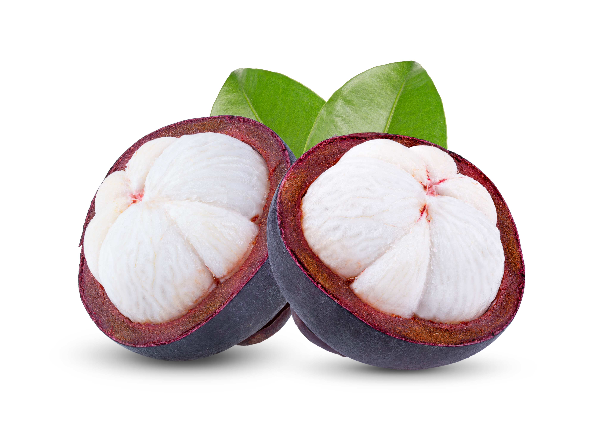
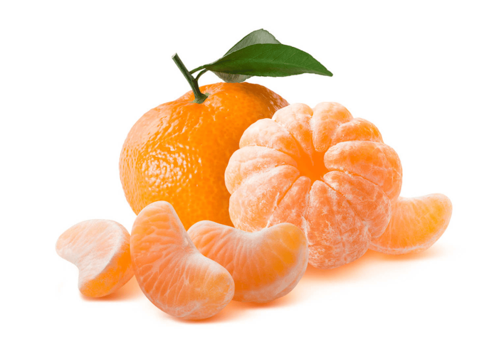
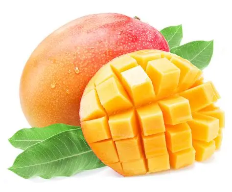

Our Hand-Picked Favorites.
For Food Lovers.
Welcome to The People's Plate, a friendly guide to deliciousness. Explore our lovingly curated lists of the best fruits, pastries, curries, and veggie dishes. Find your next favorite.

Mangosteens
Mangosteens are rich in vitamins, fiber, and antioxidants. They may boost heart health and help regulate blood sugar levels.

Tangerines
Tangerines are a good source of vitamins, enzymes, and antioxidants. They may aid digestion and boost the immune system.

Mangos
Mangos are hydrating fruits that are low in calories and high in vitamins A and C. They may support skin health and hydration.